Chapter 3 Exercises#
import os
import warnings
import numpy as np
import arviz as az
import matplotlib.pyplot as plt
import pandas as pd
from pandas.plotting import parallel_coordinates
import jax.numpy as jnp
from jax import random, local_device_count
import numpyro
import numpyro.distributions as dist
from numpyro.infer import MCMC, NUTS, SA, Predictive
seed = 1234
if "SVG" in os.environ:
%config InlineBackend.figure_formats = ["svg"]
warnings.formatwarning = lambda message, category, *args, **kwargs: "{}: {}\n".format(
category.__name__, message
)
az.style.use("arviz-darkgrid")
numpyro.set_platform("cpu") # or "gpu", "tpu" depending on system
numpyro.set_host_device_count(local_device_count())
/home/runner/work/bap-numpyro/bap-numpyro/.venv/lib/python3.13/site-packages/tqdm/auto.py:21: TqdmWarning: IProgress not found. Please update jupyter and ipywidgets. See https://ipywidgets.readthedocs.io/en/stable/user_install.html
from .autonotebook import tqdm as notebook_tqdm
Question 1#
Check the following definition of a probabilistic model. Identify the likelihood, the prior and the posterior:
\begin{eqnarray} y_i \text{~} Normal(\mu, \sigma) \newline \mu \text{~} Normal(0,10) \newline \sigma \text{~} \left|Normal(0,25) \right| \end{eqnarray}
The priors in this model are:
\begin{eqnarray} \mu \text{~} Normal(0,10) \newline \sigma \text{~} \left|Normal(0,25) \right| \end{eqnarray}
The likelihood in our model is : $\( Normal(\mu, \sigma)\)$
And the posterior will be a distribution over \(\mu\) and \(\sigma\), but the posterior is not directly specified in the model (it is the result of Bayes formula!).
Question 2#
For the model in exercise 1, how many parameters will the posterior have? In other words, how many dimensions will it have?
There are two parameters in this model: \(\mu\) and \(\sigma\). So the posterior is 2-dimensional.
Question 3#
Write Bayes’ theorem for the model in exercise 1.
Without expanding the denominator:
Expanding the denominator: $\( p(\mu, \sigma | y) = \frac{\Pi_i\; \bigg( Normal(y| \mu, \sigma)\quad Normal(\mu|0,10)\quad HalfNormal(\sigma|0,25) \bigg) }{\int \int\; \Pi_i\; \bigg( Normal(y| \mu, \sigma)\quad Normal(\mu|0,10)\quad HalfNormal(\sigma|0,25) \bigg)\; d\mu\; d\sigma} \)$
Question 4#
Check the following model. Identify the linear model and the likelihood. How many parameters does the posterior have?
\begin{eqnarray} y \text{~} Normal(\mu, \epsilon) \newline \mu = \alpha + \beta x \newline \alpha \text{~} Normal(0,10) \newline \beta \text{~} Normal(0,1) \newline \epsilon \text{~} \left|Normal(0,25) \right| \end{eqnarray}
The linear model is: \begin{eqnarray} \mu = \alpha + \beta x \end{eqnarray}
The likelihood in our model is:
$\( Normal(\mu, \epsilon)\)$
The posterior will have three parameters:
Question 5#
For the model in exercise 1, assume that you have a dataset with 57 data points coming from a Gaussian with a mean of 4 and a standard deviation of 0.5. Using PyMC3, compute:
The posterior distribution
The prior distribution
The posterior predictive distribution
The prior predictive distribution
Tip: Besides pm.sample(), PyMC3 has other functions to compute samples.
For this exercise we will generate 57 datapoints from a distribution of \(Normal(4, 0.5)\):
data = dist.Normal(loc=4, scale=5.).sample(random.PRNGKey(0), sample_shape=(57,))
def model_q5(y_obs=None):
mu = numpyro.sample("mu", dist.Normal(0, 10))
sd = numpyro.sample("sd", dist.HalfNormal(25))
with numpyro.plate("obs", len(data)):
numpyro.sample("y", dist.Normal(mu, sd), obs=y_obs)
# Posterior
mcmc_q5 = MCMC(NUTS(model_q5), num_warmup=1000, num_samples=1000)
mcmc_q5.run(random.PRNGKey(seed), y_obs=data)
# Prior predictive
prior_pred_q5 = Predictive(model_q5, num_samples=500)(random.PRNGKey(seed + 1))
# Posterior predictive
posterior_samples_q5 = mcmc_q5.get_samples()
post_pred_q5 = Predictive(model_q5, posterior_samples=posterior_samples_q5)(random.PRNGKey(seed + 2))
dataset = az.from_numpyro(
mcmc_q5,
prior=prior_pred_q5,
posterior_predictive=post_pred_q5,
)
dataset
-
<xarray.Dataset> Size: 16kB Dimensions: (chain: 1, draw: 1000) Coordinates: * chain (chain) int64 8B 0 * draw (draw) int64 8kB 0 1 2 3 4 5 6 7 ... 993 994 995 996 997 998 999 Data variables: mu (chain, draw) float32 4kB 4.8 4.641 4.798 2.96 ... 5.226 4.077 3.84 sd (chain, draw) float32 4kB 5.138 4.893 4.047 ... 4.896 4.506 4.994 Attributes: created_at: 2026-06-22T23:44:03.096823+00:00 arviz_version: 0.23.4 inference_library: numpyro inference_library_version: 0.21.0 -
<xarray.Dataset> Size: 236kB Dimensions: (chain: 1, draw: 1000, obs: 57) Coordinates: * chain (chain) int64 8B 0 * draw (draw) int64 8kB 0 1 2 3 4 5 6 7 ... 993 994 995 996 997 998 999 * obs (obs) int64 456B 0 1 2 3 4 5 6 7 8 9 ... 48 49 50 51 52 53 54 55 56 Data variables: y (chain, draw, obs) float32 228kB 16.59 5.802 0.5974 ... 10.05 8.592 Attributes: created_at: 2026-06-22T23:44:03.159939+00:00 arviz_version: 0.23.4 inference_library: numpyro inference_library_version: 0.21.0 -
<xarray.Dataset> Size: 236kB Dimensions: (chain: 1, draw: 1000, obs: 57) Coordinates: * chain (chain) int64 8B 0 * draw (draw) int64 8kB 0 1 2 3 4 5 6 7 ... 993 994 995 996 997 998 999 * obs (obs) int64 456B 0 1 2 3 4 5 6 7 8 9 ... 48 49 50 51 52 53 54 55 56 Data variables: y (chain, draw, obs) float32 228kB -3.568 -4.203 ... -2.877 -2.709 Attributes: created_at: 2026-06-22T23:44:03.158308+00:00 arviz_version: 0.23.4 inference_library: numpyro inference_library_version: 0.21.0 -
<xarray.Dataset> Size: 9kB Dimensions: (chain: 1, draw: 1000) Coordinates: * chain (chain) int64 8B 0 * draw (draw) int64 8kB 0 1 2 3 4 5 6 7 ... 993 994 995 996 997 998 999 Data variables: diverging (chain, draw) bool 1kB False False False ... False False False Attributes: created_at: 2026-06-22T23:44:03.109355+00:00 arviz_version: 0.23.4 inference_library: numpyro inference_library_version: 0.21.0 -
<xarray.Dataset> Size: 8kB Dimensions: (chain: 1, draw: 500) Coordinates: * chain (chain) int64 8B 0 * draw (draw) int64 4kB 0 1 2 3 4 5 6 7 ... 493 494 495 496 497 498 499 Data variables: mu (chain, draw) float32 2kB 1.31 3.888 6.223 ... -2.344 -8.864 1.495 sd (chain, draw) float32 2kB 10.15 41.85 26.91 ... 69.49 10.84 17.5 Attributes: created_at: 2026-06-22T23:44:03.161336+00:00 arviz_version: 0.23.4 inference_library: numpyro inference_library_version: 0.21.0 -
<xarray.Dataset> Size: 118kB Dimensions: (chain: 1, draw: 500, obs: 57) Coordinates: * chain (chain) int64 8B 0 * draw (draw) int64 4kB 0 1 2 3 4 5 6 7 ... 493 494 495 496 497 498 499 * obs (obs) int64 456B 0 1 2 3 4 5 6 7 8 9 ... 48 49 50 51 52 53 54 55 56 Data variables: y (chain, draw, obs) float32 114kB 9.418 -5.443 ... 37.98 -0.01978 Attributes: created_at: 2026-06-22T23:44:03.162895+00:00 arviz_version: 0.23.4 inference_library: numpyro inference_library_version: 0.21.0 -
<xarray.Dataset> Size: 684B Dimensions: (obs: 57) Coordinates: * obs (obs) int64 456B 0 1 2 3 4 5 6 7 8 9 ... 48 49 50 51 52 53 54 55 56 Data variables: y (obs) float32 228B 12.11 14.13 1.832 3.607 ... 6.413 8.019 0.8314 Attributes: created_at: 2026-06-22T23:44:03.163869+00:00 arviz_version: 0.23.4 inference_library: numpyro inference_library_version: 0.21.0
Let’s plot the prior distributions to get a sense of what the Bayesian model’s estimations without data
# The plot_posterior method can be used to plot priors as well
az.plot_posterior(dataset.prior, var_names=["mu", "sd"]);
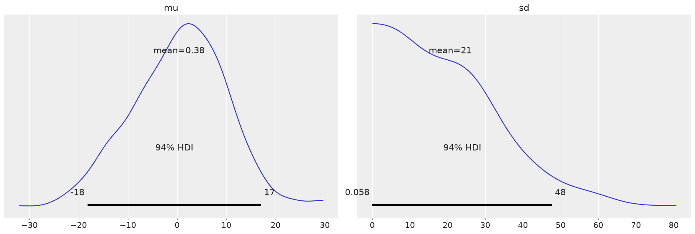
Now let’s plot the posterior, to check the distributions after update:
# Compare above plot to posterior distribution below, as well as to original parameters in distribution
az.plot_posterior(dataset)
array([<Axes: title={'center': 'mu'}>, <Axes: title={'center': 'sd'}>],
dtype=object)
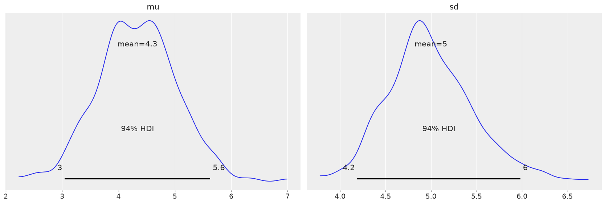
The exercise also asks for the prior predictive values. We’ll need to do some data manipulation to get the data into a format we can use with ArviZ:
dataset.prior_predictive
<xarray.Dataset> Size: 118kB
Dimensions: (chain: 1, draw: 500, obs: 57)
Coordinates:
* chain (chain) int64 8B 0
* draw (draw) int64 4kB 0 1 2 3 4 5 6 7 ... 493 494 495 496 497 498 499
* obs (obs) int64 456B 0 1 2 3 4 5 6 7 8 9 ... 48 49 50 51 52 53 54 55 56
Data variables:
y (chain, draw, obs) float32 114kB 9.418 -5.443 ... 37.98 -0.01978
Attributes:
created_at: 2026-06-22T23:44:03.162895+00:00
arviz_version: 0.23.4
inference_library: numpyro
inference_library_version: 0.21.0Let’s also plot the prior predictive values:
print(dataset.prior_predictive["y"].values.shape)
prior_predictive_vals = dataset.prior_predictive["y"].values.flatten()
prior_predictive_vals.shape
(1, 500, 57)
(28500,)
az.plot_kde(prior_predictive_vals);
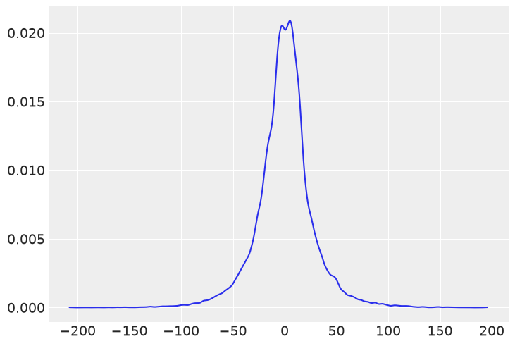
We can then compare this to the posterior predictive distribution:
az.plot_ppc(dataset);
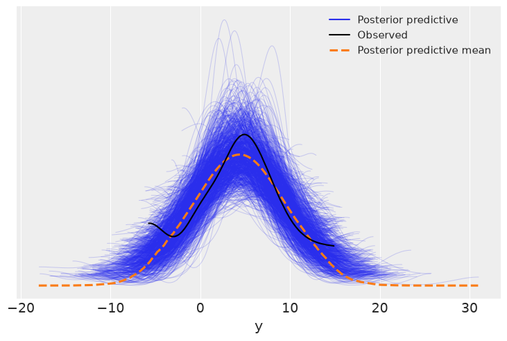
Question 6#
Execute model_g using NUTS (the default sampler) and then using Metropolis. Compare the results using ArviZ functions like plot_trace and plot_pairs. Center the variable \(x\) and repeat the exercise. What conclusion can you draw from this?
np.random.seed(1)
N = 100
alpha_real = 2.5
beta_real = 0.9
eps_real = np.random.normal(0, 0.5, size=N)
x = np.random.normal(10, 1, N)
y_real = alpha_real + beta_real * x
y = y_real + eps_real
def model_g(x, y_obs=None):
alpha = numpyro.sample("alpha", dist.Normal(0, 10))
beta = numpyro.sample("beta", dist.Normal(0, 1))
epsilon = numpyro.sample("epsilon", dist.HalfCauchy(5))
mu = numpyro.deterministic("mu", alpha + beta * x)
numpyro.sample("y_pred", dist.Normal(mu, epsilon), obs=y_obs)
%%time
mcmc_nuts_non_centered = MCMC(NUTS(model_g), num_warmup=1000, num_samples=500)
mcmc_nuts_non_centered.run(random.PRNGKey(seed), x=x, y_obs=y)
idata_nuts_non_centered = az.from_numpyro(mcmc_nuts_non_centered)
CPU times: user 4.68 s, sys: 119 ms, total: 4.8 s
Wall time: 2.79 s
az.plot_trace(idata_nuts_non_centered, var_names=["alpha", "beta", "epsilon"]);
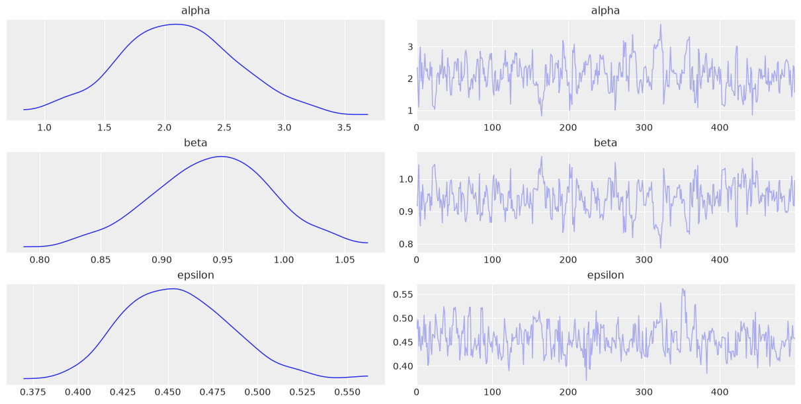
az.plot_pair(idata_nuts_non_centered, var_names=["alpha", "beta", "epsilon"]);
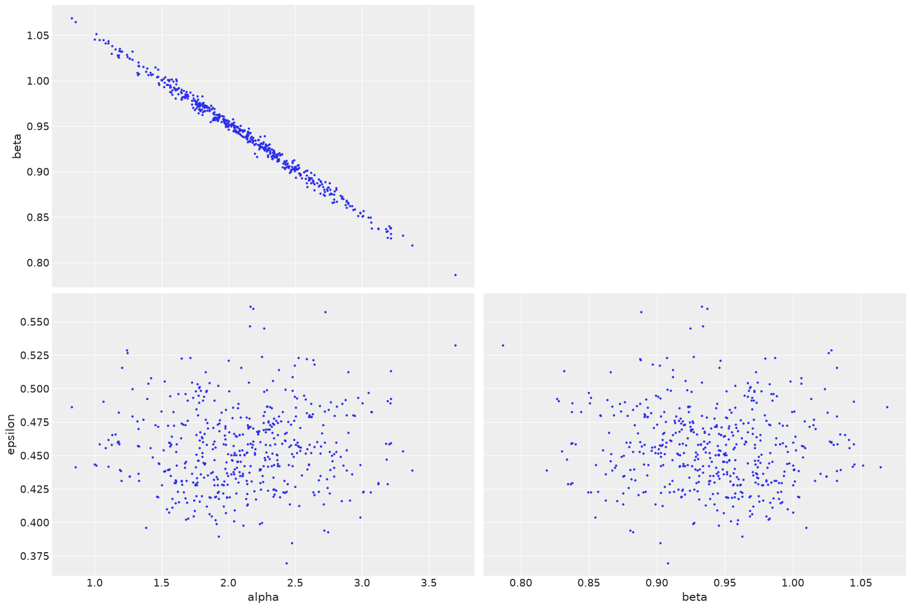
%%time
mcmc_mh_non_centered = MCMC(SA(model_g), num_warmup=1000, num_samples=500)
mcmc_mh_non_centered.run(random.PRNGKey(seed + 1), x=x, y_obs=y)
idata_mh_non_centered = az.from_numpyro(mcmc_mh_non_centered)
CPU times: user 4.47 s, sys: 89 ms, total: 4.56 s
Wall time: 2.47 s
az.plot_trace(idata_mh_non_centered, var_names=["alpha", "beta", "epsilon"]);
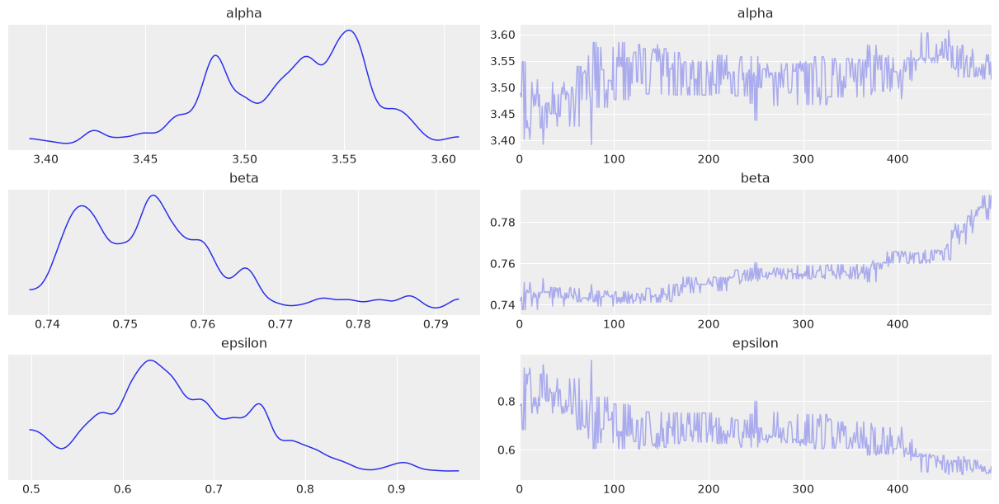
az.summary(idata_nuts_non_centered, var_names=["alpha", "beta", "epsilon"])
arviz - WARNING - Shape validation failed: input_shape: (1, 500), minimum_shape: (chains=2, draws=4)
| mean | sd | hdi_3% | hdi_97% | mcse_mean | mcse_sd | ess_bulk | ess_tail | r_hat | |
|---|---|---|---|---|---|---|---|---|---|
| alpha | 2.113 | 0.488 | 1.152 | 3.010 | 0.043 | 0.029 | 128.0 | 97.0 | NaN |
| beta | 0.941 | 0.048 | 0.850 | 1.032 | 0.004 | 0.003 | 130.0 | 98.0 | NaN |
| epsilon | 0.456 | 0.030 | 0.398 | 0.509 | 0.002 | 0.002 | 170.0 | 185.0 | NaN |
az.summary(idata_mh_non_centered, var_names=["alpha", "beta", "epsilon"])
arviz - WARNING - Shape validation failed: input_shape: (1, 500), minimum_shape: (chains=2, draws=4)
| mean | sd | hdi_3% | hdi_97% | mcse_mean | mcse_sd | ess_bulk | ess_tail | r_hat | |
|---|---|---|---|---|---|---|---|---|---|
| alpha | 3.521 | 0.039 | 3.450 | 3.585 | 0.013 | 0.007 | 13.0 | 17.0 | NaN |
| beta | 0.755 | 0.011 | 0.739 | 0.779 | 0.009 | 0.003 | 1.0 | 11.0 | NaN |
| epsilon | 0.668 | 0.092 | 0.498 | 0.816 | 0.064 | 0.017 | 2.0 | 11.0 | NaN |
Now let’s standardize the variables and take samples again. We don’t need to redefine the model, but we’ll do so for clarity’s sake:
# standardize the data
x_centered = (x - x.mean()) / x.std()
y_centered = (y - y.mean()) / y.std()
def model_g_centered(x, y_obs=None):
alpha = numpyro.sample("alpha", dist.Normal(0, 10))
beta = numpyro.sample("beta", dist.Normal(0, 1))
epsilon = numpyro.sample("epsilon", dist.HalfCauchy(5))
mu = numpyro.deterministic("mu", alpha + beta * x)
numpyro.sample("y_pred", dist.Normal(mu, epsilon), obs=y_obs)
%%time
mcmc_nuts_centered = MCMC(NUTS(model_g_centered), num_warmup=1000, num_samples=1000)
mcmc_nuts_centered.run(random.PRNGKey(seed), x=x_centered, y_obs=y_centered)
idata_nuts_centered = az.from_numpyro(mcmc_nuts_centered)
CPU times: user 3.06 s, sys: 70 ms, total: 3.13 s
Wall time: 1.35 s
az.plot_trace(idata_nuts_centered, var_names=["alpha", "beta", "epsilon"]);
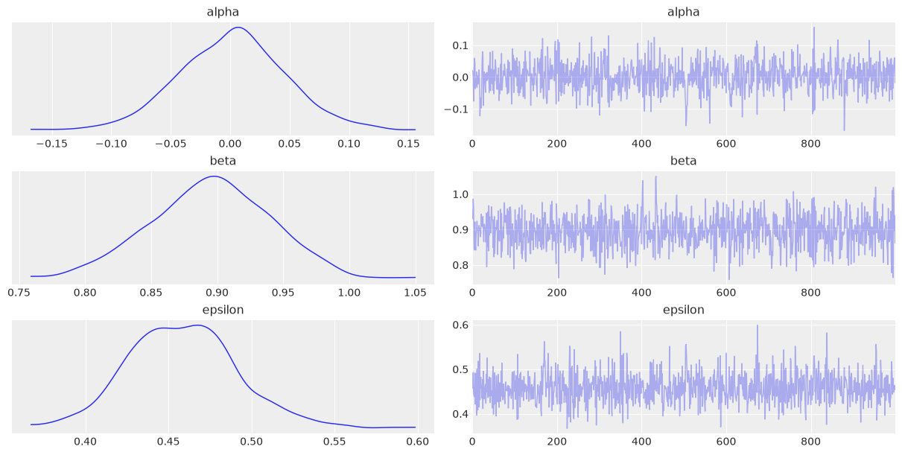
az.plot_pair(idata_nuts_centered, var_names=["alpha", "beta", "epsilon"]);
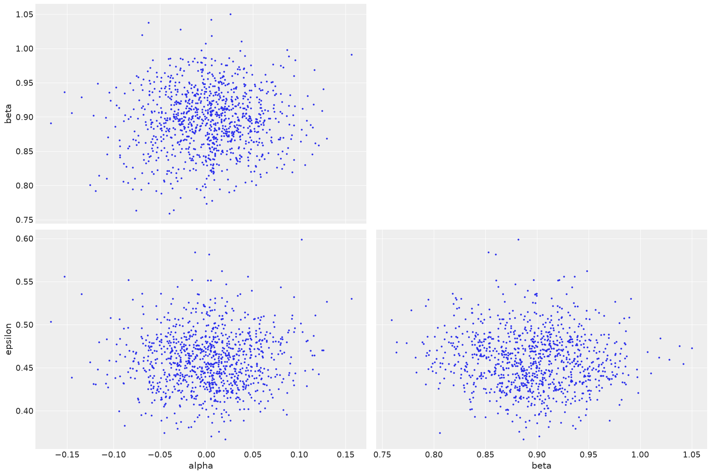
%%time
mcmc_mh_centered = MCMC(SA(model_g_centered), num_warmup=1000, num_samples=1000)
mcmc_mh_centered.run(random.PRNGKey(seed + 1), x=x_centered, y_obs=y_centered)
idata_mh_centered = az.from_numpyro(mcmc_mh_centered)
CPU times: user 2.8 s, sys: 26.4 ms, total: 2.83 s
Wall time: 1.1 s
az.plot_trace(idata_mh_centered, var_names=["alpha", "beta", "epsilon"])
array([[<Axes: title={'center': 'alpha'}>,
<Axes: title={'center': 'alpha'}>],
[<Axes: title={'center': 'beta'}>,
<Axes: title={'center': 'beta'}>],
[<Axes: title={'center': 'epsilon'}>,
<Axes: title={'center': 'epsilon'}>]], dtype=object)
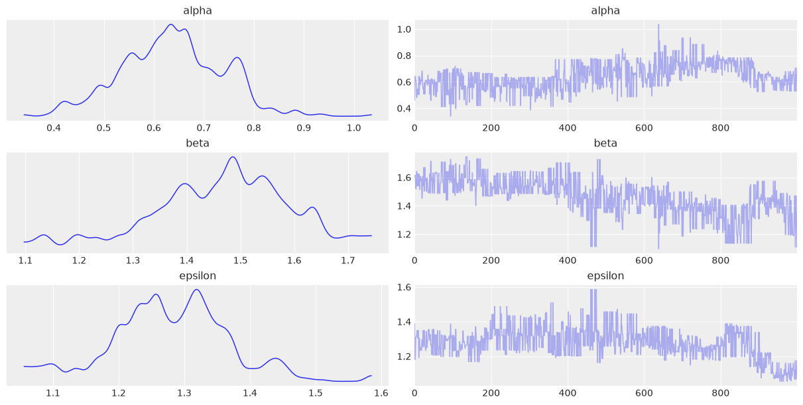
az.plot_pair(idata_mh_centered, var_names=["alpha", "beta", "epsilon"]);
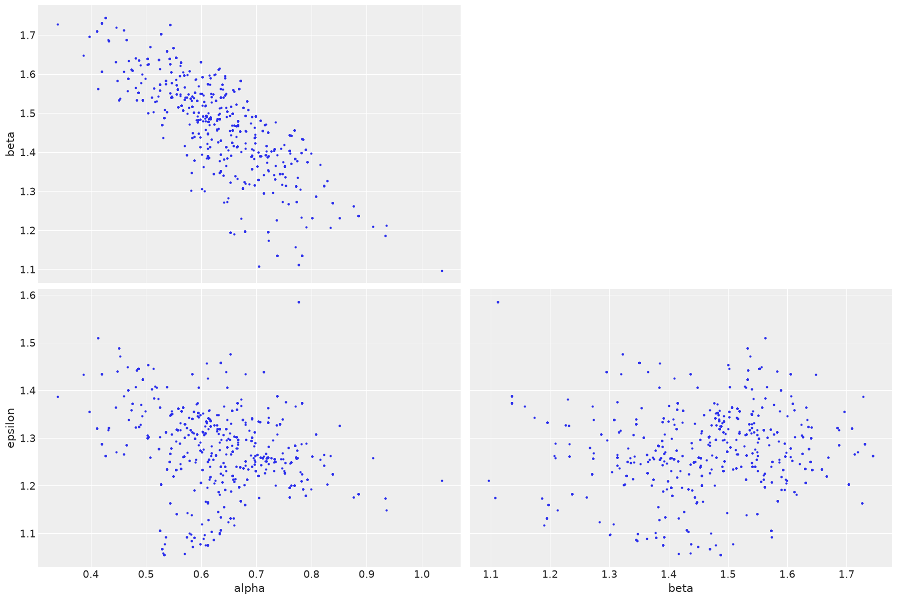
Looking through the plots there are a couple of things to note.
The Sample Adaptive (SA) sampler is less effective at sampling than NUTS. This is indicated by:
The SA trace plots looking “square” compared to the NUTS traceplot. This is due to the sampler getting “stuck” at a value.
The kernel density estimates of each chain have “squiggly” topologies.
Lower effective sample sizes for the non-centered SA run.
One thing to note though is that SA samples faster than NUTS. While the results are not great, credit is due where it is deserved!
Diving into the problem further, we can see that \(\alpha\) and \(\beta\) are linearly correlated. Random-walk samplers do not sample well when topologies have such shapes. Note how centering x helps somewhat, as centering decorrelates \(\alpha\) and \(\beta\).
The biggest takeaway is the effectiveness of NUTS, regardless of topology in these two cases.
Question 7#
Use the howell dataset to create a linear model of the weight (\(x\)) against the height (\(y\)). Exclude subjects that are younger than 18. Explain the results.
Let’s import the dataset and create a mask for people older than 18:
howell = pd.read_csv("../data/howell.csv", delimiter=";")
howell.head()
| height | weight | age | male | |
|---|---|---|---|---|
| 0 | 151.765 | 47.825606 | 63.0 | 1 |
| 1 | 139.700 | 36.485807 | 63.0 | 0 |
| 2 | 136.525 | 31.864838 | 65.0 | 0 |
| 3 | 156.845 | 53.041914 | 41.0 | 1 |
| 4 | 145.415 | 41.276872 | 51.0 | 0 |
age_18_mask = howell["age"] > 18
A good first step before diving into statistics is to look at the data and ask if it makes sense. In my experience taller people tend to weigh more than shorter people. Let’s check the data to be sure.
howell[age_18_mask].plot(kind="scatter", x="weight", y="height");
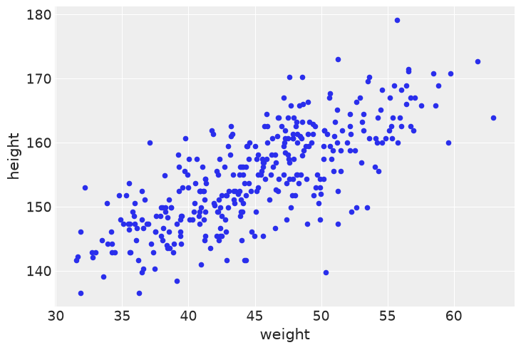
When looking at the plot above this is consistent with our expectations. As weight increases, height increases as well. From visual inspection, it looks like a linear fit with some noise is best. In this case we will assume constant variance. Let’s create a model:
height = howell["height"].values
weight = howell["weight"].values
weight_over18 = weight[age_18_mask.values]
height_over18 = height[age_18_mask.values]
def model_over18(w, h_obs=None):
alpha = numpyro.sample("alpha", dist.Normal(0, 10))
beta = numpyro.sample("beta", dist.Normal(0, 10))
epsilon = numpyro.sample("epsilon", dist.HalfNormal(10))
mu = numpyro.deterministic("mu", alpha + beta * w)
numpyro.sample("height_pred", dist.Normal(mu, epsilon), obs=h_obs)
mcmc_over18 = MCMC(NUTS(model_over18), num_warmup=2000, num_samples=2000)
mcmc_over18.run(random.PRNGKey(seed), w=weight_over18, h_obs=height_over18)
samples_over18 = mcmc_over18.get_samples()
ppc_over18 = Predictive(model_over18, posterior_samples=samples_over18)(
random.PRNGKey(seed + 1), w=weight_over18
)
idata_over18 = az.from_numpyro(mcmc_over18, posterior_predictive=ppc_over18)
az.plot_trace(idata_over18, var_names=["alpha", "beta", "epsilon"]);
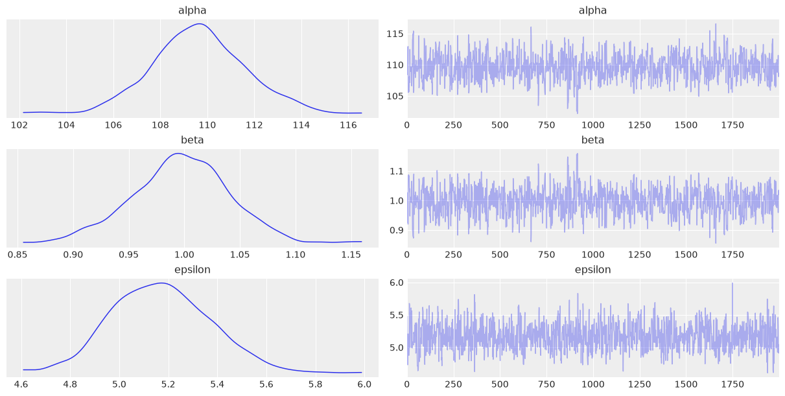
Looking at the traceplot it looks like the inference engine was able to explore the posterior adequately. Let’s plot the regression and the HPD.
fig, ax = plt.subplots()
ax.plot(weight_over18, height_over18, "C0.")
mu_m = samples_over18["mu"].mean(0)
ax.plot(weight_over18, mu_m, c="k")
az.plot_hdi(weight_over18, samples_over18["mu"], hdi_prob=0.98, ax=ax)
az.plot_hdi(weight_over18, ppc_over18["height_pred"], hdi_prob=0.98, color="gray", ax=ax)
fig.suptitle("Weight vs Height fit and posterior predictive checks");
FutureWarning: hdi currently interprets 2d data as (draw, shape) but this will change in a future release to (chain, draw) for coherence with other functions
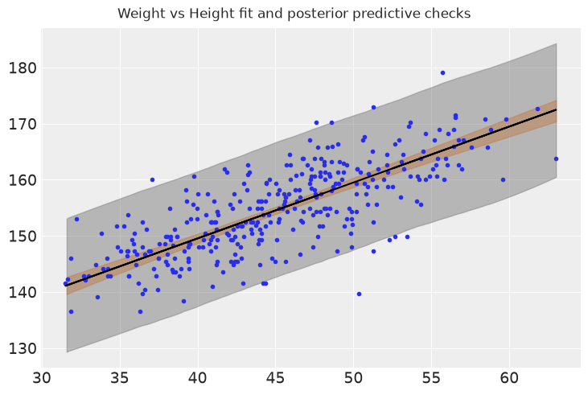
From visual inspection the average parameters of the fit look quite good, and the 98% interval of the posterior predictive checks covers most of the distribution. Overall, it looks like a linear fit is great for height vs weight for people over 18!
Question 8#
For four subjects, we get the weights (45.73, 65.8, 54.2, 32.59), but not their heights. Using the model from the previous exercise, predict the height for each subject, together with their 50% and 94% HPDs.
Tip 1: Check the coal mining disaster example in PyMC3’s documentation.
Tip 2: Use shared variables.
Using our previous fit, we can generate predictions for the height of people with various weights:
weights_new = jnp.array([45.73, 65.8, 54.2, 32.59])
ppc_new_weights = Predictive(model_over18, posterior_samples=samples_over18)(
random.PRNGKey(seed + 3), w=weights_new
)
ppc_first_weight = ppc_new_weights["height_pred"][:, 0]
az.plot_kde(np.array(ppc_first_weight));
# 50% and 94% HPDs for each of the four subjects
for i, w in enumerate(weights_new):
hpd_50 = az.hdi(np.array(ppc_new_weights["height_pred"][:, i]), hdi_prob=0.50)
hpd_94 = az.hdi(np.array(ppc_new_weights["height_pred"][:, i]), hdi_prob=0.94)
print(f"Weight {w:.2f}: 50% HPD={hpd_50}, 94% HPD={hpd_94}")
Weight 45.73: 50% HPD=[151.84628 158.92767], 94% HPD=[146.19116 165.44571]
Weight 65.80: 50% HPD=[171.21796 178.18149], 94% HPD=[164.56381 184.50688]
Weight 54.20: 50% HPD=[159.60318 166.53947], 94% HPD=[154.13289 173.23651]
Weight 32.59: 50% HPD=[137.54744 144.5503 ], 94% HPD=[131.31529 151.54887]
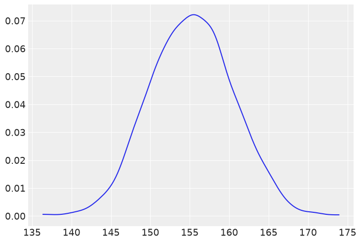
Question 9#
Repeat exercise 7, this time including those below 18 years old. Explain the results.
Let’s take a look at the data again, now without the age limit:
howell.plot(kind="scatter", x="weight", y="height");
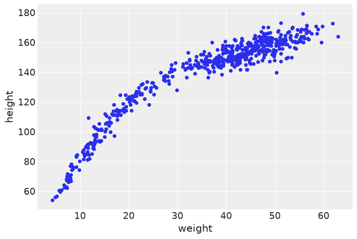
By removing the age limit we notice a different trend. At lower weights, a single unit of weight generally corresponds to more height. At higher weights however the height still goes up, but by a lesser amount. There also seems to be more “spread” in the higher weights, than in the lower weights.
Intuitively again this makes sense. Weight is a proxy for age, and when born the variability in height and weight is smaller than for adults. Additionally children tend to grow in both height and weight. Once humans reach adulthood, the height is mostly fixed, and the weight unfortunately changes all too easily.
Another thing to note is the shape of the distribution: it no longer looks linear throughout, but instead looks more like a curve. We could use a square root linear fit, like earlier in the chapter, but we instead will use a logarithmic fit. We will also model the noise term to be correlated with weight, as heights seem to vary more when weights get higher.
def model_heights_log(w, h_obs=None):
alpha = numpyro.sample("alpha", dist.Normal(0, 10))
beta = numpyro.sample("beta", dist.Normal(0, 10))
gamma = numpyro.sample("gamma", dist.HalfNormal(10))
delta = numpyro.sample("delta", dist.HalfNormal(10))
mu = numpyro.deterministic("mu", alpha + beta * jnp.log(w))
epsilon = numpyro.deterministic("epsilon", gamma + delta * w)
numpyro.sample("height_pred", dist.Normal(mu, epsilon), obs=h_obs)
mcmc_heights = MCMC(NUTS(model_heights_log), num_warmup=2000, num_samples=2000)
mcmc_heights.run(random.PRNGKey(seed), w=weight, h_obs=height)
samples_heights = mcmc_heights.get_samples()
ppc_heights = Predictive(model_heights_log, posterior_samples=samples_heights)(
random.PRNGKey(seed + 1), w=weight
)
idata_heights = az.from_numpyro(mcmc_heights, posterior_predictive=ppc_heights)
az.plot_trace(idata_heights, var_names=["alpha", "beta", "gamma", "delta"]);
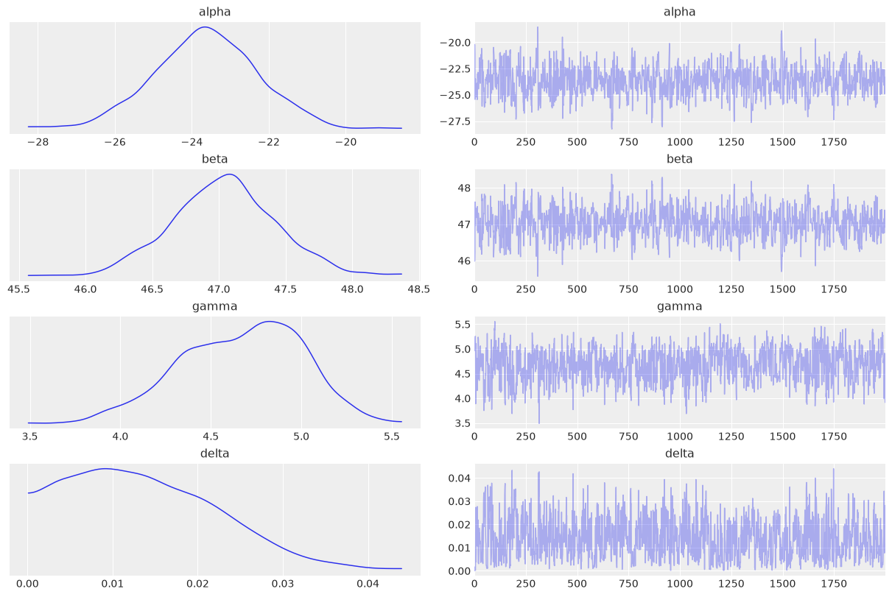
fig, ax = plt.subplots()
ax.plot(weight, height, "C0.")
mu_m = samples_heights["mu"].mean(0)
order = np.argsort(weight)
ax.plot(weight[order], mu_m[order], c="k")
az.plot_hdi(weight, samples_heights["mu"], hdi_prob=0.98, ax=ax)
az.plot_hdi(weight, ppc_heights["height_pred"], hdi_prob=0.98, color="gray", ax=ax)
fig.suptitle("Weight vs Height fit and posterior predictive checks");
FutureWarning: hdi currently interprets 2d data as (draw, shape) but this will change in a future release to (chain, draw) for coherence with other functions
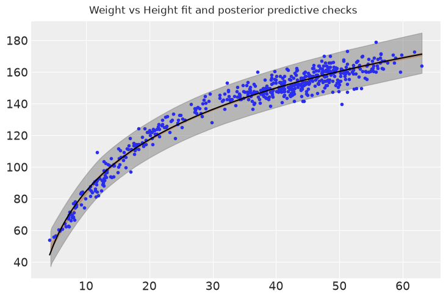
Let’s also plot the noise as a function of weight:
fig, ax = plt.subplots()
epsilon_mean = samples_heights["epsilon"].mean(0)
ax.plot(weight, epsilon_mean)
az.plot_hdi(weight, samples_heights["epsilon"], hdi_prob=0.98, ax=ax);
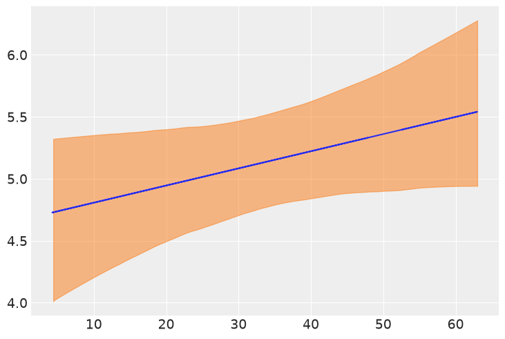
We can see that in lower weight ranges there tends to be less variability in height than for bigger weight ranges (i.e when people are older). This makes sense intuitively, as humans start out roughly the same in their earlier years, and tend to become more different in physical dimensions as they grow older in age and weight.
Question 10#
It is known that for many species the weight does not scale with the height, but with the logarithm of the weight. Use this information to fit the howell data (including subjects from all ages). Do one more model, this time without using the logarithm but instead a second order polynomial. Compare and explain both results.
We did the logarithm bit in the previous exercise, so let’s directly fit the model with a 2nd order polynomial that follows this definition: $\(\mu = \alpha + \beta_0*x + \beta_1*x^2\)$
Note that we could have used the dot product like in the model_mlr example, but in this model we chose to explicitly split out the terms.
def model_heights_polynomial(w, h_obs=None):
alpha = numpyro.sample("alpha", dist.Normal(0, 10))
beta = numpyro.sample("beta", dist.Normal(jnp.zeros(2), 10 * jnp.ones(2)))
gamma = numpyro.sample("gamma", dist.HalfNormal(10))
delta = numpyro.sample("delta", dist.HalfNormal(10))
mu = numpyro.deterministic("mu", alpha + beta[0] * w + beta[1] * w ** 2)
epsilon = numpyro.deterministic("epsilon", gamma + delta * w)
numpyro.sample("height_pred", dist.Normal(mu, epsilon), obs=h_obs)
mcmc_heights_poly = MCMC(NUTS(model_heights_polynomial), num_warmup=2000, num_samples=2000)
mcmc_heights_poly.run(random.PRNGKey(seed), w=weight, h_obs=height)
samples_heights_poly = mcmc_heights_poly.get_samples()
ppc_heights_poly = Predictive(model_heights_polynomial, posterior_samples=samples_heights_poly)(
random.PRNGKey(seed + 1), w=weight
)
idata_heights_poly = az.from_numpyro(mcmc_heights_poly, posterior_predictive=ppc_heights_poly)
az.plot_trace(idata_heights_poly, var_names=["alpha", "beta", "gamma", "delta"]);
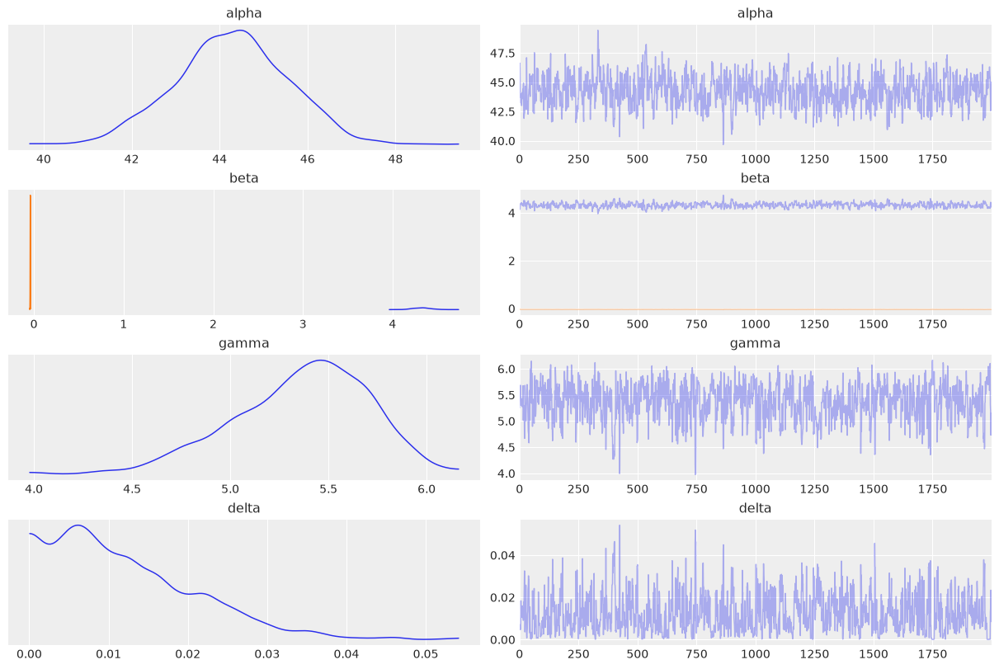
fig, ax = plt.subplots()
ax.plot(weight, height, "C0.")
az.plot_hdi(weight, samples_heights_poly["mu"], hdi_prob=0.98, ax=ax)
az.plot_hdi(weight, ppc_heights_poly["height_pred"], hdi_prob=0.98, color="gray", ax=ax)
fig.suptitle("Weight vs Height fit and posterior predictive checks");
FutureWarning: hdi currently interprets 2d data as (draw, shape) but this will change in a future release to (chain, draw) for coherence with other functions
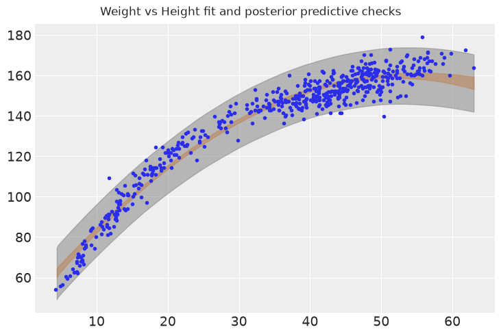
For weights up until around ~50 units, the polynomial fit looks good. However past that point the curve starts dropping. Intuitively this does not make sense. This phenomenon is not a property of our data, but of our model choice. Polynomial functions always have to make N-1 turns, where N is the degree of the polynomial. This does not necessarily make our model useless, it seems to do a good job in certain parts of the domain, but as a statistical modeler, it is up to you to understand the tools in your toolbox and the tradeoffs of each.
Question 11#
Think about a model that’s able to fit the first three dataset from the Anscombe quartet. Also, think about a model to fit the fourth dataset.
Below are all four datasets from Anscombe’s Quartet

A model that might fit the first three models is a polynomial regression of the form:
\( y = \alpha_2 x^2 + \alpha_1 x + \alpha_0 \)
For the more linear datasets the model could have a low value for \(\alpha_2\), and for the second dataset the model would be able to fit the non linearity.
For the last dataset there seems to be two distinct patterns, a cluster of points at x=8 and one at x=19. We could model this one with two groups as follows:
df = pd.read_csv("../data/anscombe.csv")
df = df.loc[df["group"] == "IV", ["x", "y"]]
idx = (df["x"] == 8).astype(int)
idx
33 1
34 1
35 1
36 1
37 1
38 1
39 1
40 0
41 1
42 1
43 1
Name: x, dtype: int64
idx_arr = jnp.array(idx.values, dtype=int)
y_iv = jnp.array(df["y"].values)
def model_anscombe(group_idx, y_obs=None):
mu = numpyro.sample("mu", dist.Normal(jnp.zeros(2), 10 * jnp.ones(2)))
sd = numpyro.sample("sd", dist.HalfNormal(10))
numpyro.sample("y", dist.Normal(mu[group_idx], sd), obs=y_obs)
mcmc_anscombe = MCMC(NUTS(model_anscombe), num_warmup=1000, num_samples=2000)
mcmc_anscombe.run(random.PRNGKey(seed), group_idx=idx_arr, y_obs=y_iv)
samples_anscombe = mcmc_anscombe.get_samples()
ppc_anscombe = Predictive(model_anscombe, posterior_samples=samples_anscombe)(
random.PRNGKey(seed + 1), group_idx=idx_arr
)
idata_anscombe = az.from_numpyro(mcmc_anscombe, posterior_predictive=ppc_anscombe)
az.plot_trace(idata_anscombe);
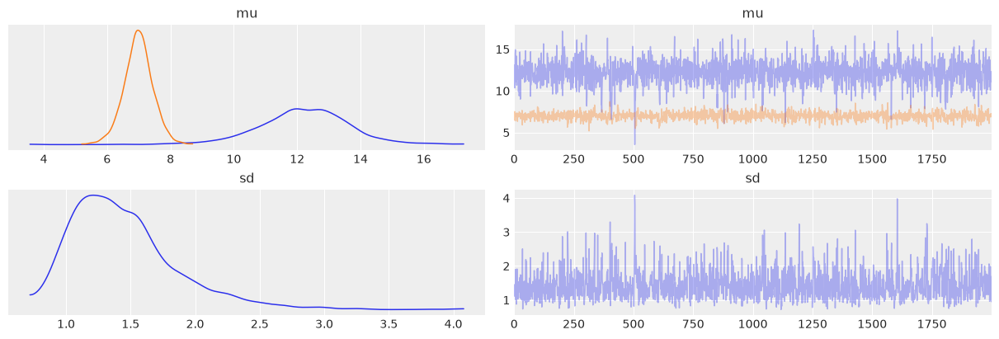
Question 12#
See in the code accompanying the book the model_t2 (and the data associated with it). Experiment with priors for \(\nu\), like the non-shifted exponential and gamma priors (they are commented in the code below). Plot the prior distribution, to ensure that you understand them. An easy way to do this is to just comment the likelihood in the model and check the trace plot. A more efficient way though is to use the pm.sample_prior_predictive() function instead of pm.sample().
ans = pd.read_csv("../data/anscombe.csv")
x_4 = jnp.array(ans[ans.group == "IV"]["x"].values, dtype=float)
y_4 = jnp.array(ans[ans.group == "IV"]["y"].values, dtype=float)
# Exponential prior on nu
def model_t2_exp(x, y_obs=None):
alpha = numpyro.sample("alpha", dist.Normal(0, 100))
beta = numpyro.sample("beta", dist.Normal(0, 1))
epsilon = numpyro.sample("epsilon", dist.HalfCauchy(5))
nu = numpyro.sample("nu", dist.Exponential(1 / 30))
numpyro.sample("y_pred", dist.StudentT(nu, alpha + beta * x, epsilon), obs=y_obs)
prior_v_exp = Predictive(model_t2_exp, num_samples=2000)(random.PRNGKey(seed), x=x_4)
mcmc_v_exp = MCMC(NUTS(model_t2_exp), num_warmup=1000, num_samples=2000)
mcmc_v_exp.run(random.PRNGKey(seed + 1), x=x_4, y_obs=y_4)
data_exp = az.from_numpyro(mcmc_v_exp, prior=prior_v_exp)
az.plot_trace(data_exp.prior, var_names=["nu"]);
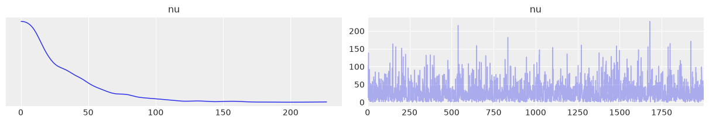
# Gamma prior on nu: mean=20, sd=15
def model_t2_gamma20(x, y_obs=None):
alpha = numpyro.sample("alpha", dist.Normal(0, 100))
beta = numpyro.sample("beta", dist.Normal(0, 1))
epsilon = numpyro.sample("epsilon", dist.HalfCauchy(5))
# Gamma parameterised by mean=20, sd=15: concentration=mean^2/sd^2, rate=mean/sd^2
concentration = (20.0 ** 2) / (15.0 ** 2)
rate = 20.0 / (15.0 ** 2)
nu = numpyro.sample("nu", dist.Gamma(concentration, rate))
numpyro.sample("y_pred", dist.StudentT(nu, alpha + beta * x, epsilon), obs=y_obs)
prior_v20_15 = Predictive(model_t2_gamma20, num_samples=2000)(random.PRNGKey(seed), x=x_4)
mcmc_v20 = MCMC(NUTS(model_t2_gamma20), num_warmup=1000, num_samples=2000)
mcmc_v20.run(random.PRNGKey(seed + 1), x=x_4, y_obs=y_4)
data_20 = az.from_numpyro(mcmc_v20, prior=prior_v20_15)
az.plot_trace(data_20.prior, var_names=["nu"]);
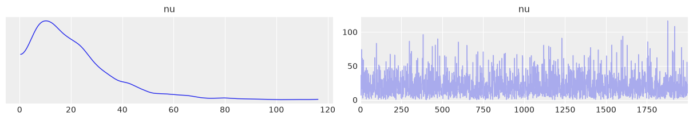
# Gamma prior on nu: shape=2, rate=0.1
def model_t2_gamma2(x, y_obs=None):
alpha = numpyro.sample("alpha", dist.Normal(0, 100))
beta = numpyro.sample("beta", dist.Normal(0, 1))
epsilon = numpyro.sample("epsilon", dist.HalfCauchy(5))
nu = numpyro.sample("nu", dist.Gamma(2, 0.1))
numpyro.sample("y_pred", dist.StudentT(nu, alpha + beta * x, epsilon), obs=y_obs)
prior_v2_01 = Predictive(model_t2_gamma2, num_samples=2000)(random.PRNGKey(seed), x=x_4)
mcmc_v2_01 = MCMC(NUTS(model_t2_gamma2), num_warmup=1000, num_samples=2000)
mcmc_v2_01.run(random.PRNGKey(seed + 1), x=x_4, y_obs=y_4)
data_2 = az.from_numpyro(mcmc_v2_01, prior=prior_v2_01)
az.plot_trace(data_2.prior, var_names=["nu"]);
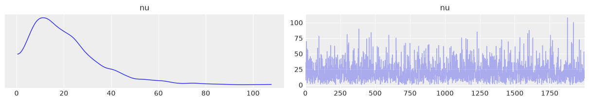
Question 13#
For the unpooled_model, change the value of sd for the \(\beta\) prior. Try values of 1 and 100. Explore how the estimated slopes change for each group. Which group is more affected by this change?
N = 20
M = 8
idx = np.repeat(range(M - 1), N)
idx = np.append(idx, 7)
np.random.seed(314)
alpha_real = np.random.normal(2.5, 0.5, size=M)
beta_real = np.random.beta(6, 1, size=M)
eps_real = np.random.normal(0, 0.5, size=len(idx))
y_m = np.zeros(len(idx))
x_m = np.random.normal(10, 1, len(idx))
y_m = alpha_real[idx] + beta_real[idx] * x_m + eps_real
x_centered = x_m - x_m.mean()
Let’s loop through a couple of standard deviation values for the slope parameter of each group:
sd_values = [1, 10, 100]
all_mcmcs = {}
for sd_value in sd_values:
def make_model(sd_val):
def model_unpooled(x, group_idx, y_obs=None):
alpha_tmp = numpyro.sample(
"alpha_tmp", dist.Normal(jnp.zeros(M), 10 * jnp.ones(M))
)
beta = numpyro.sample(
"beta", dist.Normal(jnp.zeros(M), sd_val * jnp.ones(M))
)
epsilon = numpyro.sample("epsilon", dist.HalfCauchy(5))
nu = numpyro.sample("nu", dist.Exponential(1 / 30))
mu = alpha_tmp[group_idx] + beta[group_idx] * x
numpyro.deterministic("alpha", alpha_tmp - beta * x_m.mean())
numpyro.sample("y_pred", dist.StudentT(nu, mu, epsilon), obs=y_obs)
return model_unpooled
model_fn = make_model(float(sd_value))
mcmc_unpooled = MCMC(NUTS(model_fn), num_warmup=1000, num_samples=2000, progress_bar=False)
mcmc_unpooled.run(
random.PRNGKey(seed),
x=x_centered,
group_idx=jnp.array(idx, dtype=int),
y_obs=y_m,
)
all_mcmcs[sd_value] = mcmc_unpooled
all_summaries = []
for sd, mcmc_obj in all_mcmcs.items():
idata = az.from_numpyro(mcmc_obj)
summary = az.summary(idata)
summary["group"] = f"sd_{sd}"
summary.reset_index(inplace=True)
all_summaries.append(summary)
summaries_df = pd.concat(all_summaries)
arviz - WARNING - Shape validation failed: input_shape: (1, 2000), minimum_shape: (chains=2, draws=4)
arviz - WARNING - Shape validation failed: input_shape: (1, 2000), minimum_shape: (chains=2, draws=4)
arviz - WARNING - Shape validation failed: input_shape: (1, 2000), minimum_shape: (chains=2, draws=4)
beta_rows = summaries_df[summaries_df["index"].str.contains("beta\[")]
beta_rows = beta_rows[["group", "mean", "index"]]
SyntaxWarning: invalid escape sequence '\['
SyntaxWarning: invalid escape sequence '\['
SyntaxWarning: invalid escape sequence '\['
beta_p = beta_rows.pivot(index="group", columns="index")
beta_p.columns = beta_p.columns.droplevel(0)
beta_p.reset_index(inplace=True)
beta_p
| index | group | beta[0] | beta[1] | beta[2] | beta[3] | beta[4] | beta[5] | beta[6] | beta[7] |
|---|---|---|---|---|---|---|---|---|---|
| 0 | sd_1 | 0.891 | 0.866 | 0.588 | 0.692 | 0.859 | 0.673 | 0.978 | 0.009 |
| 1 | sd_10 | 0.894 | 0.877 | 0.596 | 0.698 | 0.872 | 0.679 | 0.986 | 0.195 |
| 2 | sd_100 | 0.891 | 0.880 | 0.592 | 0.699 | 0.869 | 0.678 | 0.986 | 10.705 |
parallel_coordinates(beta_p, "group")
<Axes: >
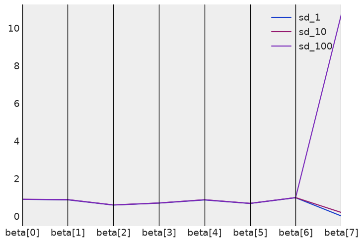
As we increase the standard deviation of the beta prior (the slope parameter), we see that for most of the groups the effect is negligible. However, for group 7 the prior has a strong effect on the posterior estimation because group 7 only has one data point and the unpooled model does not consider the datapoints in the other groups. There simply is not enough data to “wash out” the prior distribution in this case.
Question 14#
Using the model hierarchical_model, repeat Figure 3.18, the one with the eight groups and the eight lines, but this time add the uncertainty to the linear fit.
N = 20
M = 8
idx = np.repeat(range(M - 1), N)
idx = np.append(idx, 7)
np.random.seed(314)
alpha_real = np.random.normal(2.5, 0.5, size=M)
beta_real = np.random.beta(6, 1, size=M)
eps_real = np.random.normal(0, 0.5, size=len(idx))
y_m = np.zeros(len(idx))
x_m = np.random.normal(10, 1, len(idx))
y_m = alpha_real[idx] + beta_real[idx] * x_m + eps_real
x_centered_hm = x_m - x_m.mean()
def model_hierarchical(x, group_idx, y_obs=None):
# Hyper-priors
alpha_mu_tmp = numpyro.sample("alpha_mu_tmp", dist.Normal(0, 10))
alpha_sigma_tmp = numpyro.sample("alpha_sigma_tmp", dist.HalfNormal(10))
beta_mu = numpyro.sample("beta_mu", dist.Normal(0, 10))
beta_sigma = numpyro.sample("beta_sigma", dist.HalfNormal(10))
# Group-level priors
alpha_tmp = numpyro.sample(
"alpha_tmp", dist.Normal(alpha_mu_tmp * jnp.ones(M), alpha_sigma_tmp * jnp.ones(M))
)
beta = numpyro.sample(
"beta", dist.Normal(beta_mu * jnp.ones(M), beta_sigma * jnp.ones(M))
)
epsilon = numpyro.sample("epsilon", dist.HalfCauchy(5))
nu = numpyro.sample("nu", dist.Exponential(1 / 30))
mu = alpha_tmp[group_idx] + beta[group_idx] * x
numpyro.sample("y_pred", dist.StudentT(nu, mu, epsilon), obs=y_obs)
numpyro.deterministic("alpha", alpha_tmp - beta * x_m.mean())
numpyro.deterministic("alpha_mu", alpha_mu_tmp - beta_mu * x_m.mean())
numpyro.deterministic("alpha_sd", alpha_sigma_tmp - beta_mu * x_m.mean())
mcmc_hm = MCMC(NUTS(model_hierarchical), num_warmup=1000, num_samples=1000)
mcmc_hm.run(
random.PRNGKey(seed),
x=x_centered_hm,
group_idx=jnp.array(idx, dtype=int),
y_obs=y_m,
)
samples_hm = mcmc_hm.get_samples()
chain_length = 1000
random_draws = np.random.randint(0, chain_length - 1, 20)
_, ax = plt.subplots(2, 4, figsize=(10, 5), sharex=True, sharey=True,
constrained_layout=True)
ax = np.ravel(ax)
j, k = 0, N
x_range = np.linspace(x_m.min(), x_m.max(), 10)
for i in range(M):
ax[i].scatter(x_m[j:k], y_m[j:k])
ax[i].set_xlabel(f"x_{i}")
ax[i].set_ylabel(f"y_{i}", labelpad=17, rotation=0)
for random_draw in random_draws:
a = float(samples_hm["alpha"][random_draw, i])
b = float(samples_hm["beta"][random_draw, i])
ax[i].plot(x_m, a + b * x_m, "C1-", alpha=0.5)
alpha_m = float(samples_hm["alpha"][:, i].mean())
beta_m = float(samples_hm["beta"][:, i].mean())
ax[i].plot(x_range, alpha_m + beta_m * x_range, c="k",
label=f"y = {alpha_m:.2f} + {beta_m:.2f} * x")
plt.xlim(x_m.min() - 1, x_m.max() + 1)
plt.ylim(y_m.min() - 1, y_m.max() + 1)
j += N
k += N
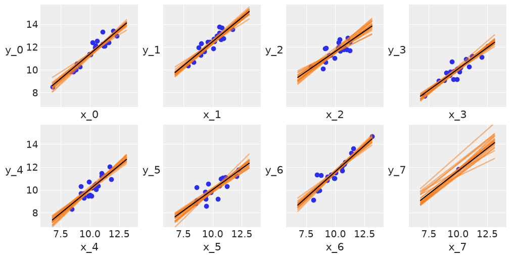
Question 15#
Re-run the model_mlr example, this time without centering the data. Compare the uncertainty in the \(\alpha\) parameter for one case and the other. Can you explain these results?
Tip: Remember the definition of the \(\alpha\) parameter (also known as the intercept).
np.random.seed(314)
N = 100
alpha_real = 2.5
beta_real = [0.9, 1.5]
eps_real = np.random.normal(0, 0.5, size=N)
X = np.array([np.random.normal(i, j, N) for i, j in zip([10, 2], [1, 1.5])]).T
X_mean = X.mean(axis=0, keepdims=True)
y = alpha_real + np.dot(X, beta_real) + eps_real
def model_mlr(X_data, y_obs=None):
alpha_tmp = numpyro.sample("alpha_tmp", dist.Normal(0, 10))
beta = numpyro.sample("beta", dist.Normal(jnp.zeros(2), jnp.ones(2)))
epsilon = numpyro.sample("epsilon", dist.HalfCauchy(5))
mu = alpha_tmp + jnp.dot(X_data, beta)
numpyro.deterministic("alpha", alpha_tmp - jnp.dot(X_mean, beta).squeeze())
numpyro.sample("y_pred", dist.Normal(mu, epsilon), obs=y_obs)
mcmc_mlr = MCMC(NUTS(model_mlr), num_warmup=1000, num_samples=2000)
mcmc_mlr.run(random.PRNGKey(seed), X_data=X, y_obs=y)
idata_mlr = az.from_numpyro(mcmc_mlr)
az.summary(idata_mlr, var_names=["alpha", "beta", "epsilon"])
arviz - WARNING - Shape validation failed: input_shape: (1, 2000), minimum_shape: (chains=2, draws=4)
| mean | sd | hdi_3% | hdi_97% | mcse_mean | mcse_sd | ess_bulk | ess_tail | r_hat | |
|---|---|---|---|---|---|---|---|---|---|
| alpha | -10.927 | 0.925 | -12.670 | -9.210 | 0.031 | 0.026 | 909.0 | 916.0 | NaN |
| beta[0] | 0.970 | 0.045 | 0.892 | 1.057 | 0.001 | 0.001 | 939.0 | 965.0 | NaN |
| beta[1] | 1.469 | 0.034 | 1.408 | 1.537 | 0.001 | 0.001 | 993.0 | 994.0 | NaN |
| epsilon | 0.475 | 0.034 | 0.412 | 0.540 | 0.001 | 0.001 | 1101.0 | 733.0 | NaN |
With the non-centered data, \(\alpha\) changes to compensate for the position of the points. In other words, \(\alpha\) needs to compensate \(\beta X\) distance up or down since the \(X\) values are no longer centered around the \(y\) axis.
Question 16#
Read and run this notebook from PyMC3’s documentation
Question 17#
Choose a dataset that you find interesting and use it with the simple linear regression model. Be sure to explore the results using ArviZ functions and compute the Pearson correlation coefficient. If you do not have an interesting dataset, try searching online, for example here or there.